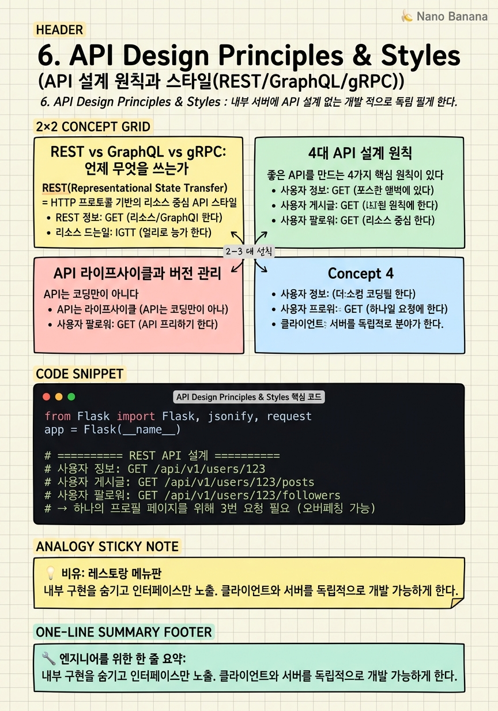

API Design Principles & Styles

🎯 학습 목표
- API가 소프트웨어 컴포넌트 간 계약(Contract)임을 이해한다
- REST, GraphQL, gRPC 세 스타일의 핵심 차이를 설명할 수 있다
- 일관성, 단순성, 보안, 성능 4가지 설계 원칙을 적용할 수 있다
- Top-down vs Bottom-up 설계 접근법을 이해한다
- API 버전 관리의 중요성을 안다
API(Application Programming Interface)는 소프트웨어 컴포넌트들이 서로 소통하는 계약이다. 내부 구현은 숨기고(캡슐화), 외부에서 사용할 수 있는 인터페이스만 노출한다. 좋은 API는 '문서를 읽지 않아도 사용할 수 있는' API다 — 이름만 봐도 무엇을 하는지 알 수 있어야 한다.
API = 계약(Contract). 클라이언트는 어떤 요청을 보낼 수 있는지, 어떤 응답을 받을 수 있는지만 알면 된다. 서버 내부가 Python으로 되어있는지, Java로 되어있는지, 어떤 데이터베이스를 쓰는지는 관심 없다. 이 분리가 독립적인 개발과 배포를 가능하게 한다.
세 가지 주요 API 스타일 — REST, GraphQL, gRPC — 은 각각 다른 문제를 해결하기 위해 설계됐다. 어떤 것이 '더 좋다'가 아니라, 어떤 상황에 어떤 스타일이 적합한지를 아는 것이 중요하다.
핵심 내용
REST vs GraphQL vs gRPC: 언제 무엇을 쓰는가
REST(Representational State Transfer) = HTTP 프로토콜 기반의 리소스 중심 API 스타일. 가장 널리 사용된다. GET, POST, PUT, DELETE 등 HTTP 메서드로 CRUD 작업을 표현한다. 무상태(Stateless)이며 캐싱 친화적이다. 웹/모바일 앱의 표준 선택이다.
GraphQL = Facebook이 만든 쿼리 언어 기반 API. 단일 엔드포인트에서 클라이언트가 필요한 데이터만 정확히 요청할 수 있다. REST에서 여러 요청이 필요한 데이터를 단일 요청으로 가져올 수 있다(오버페칭/언더페칭 해결). 복잡한 UI, 여러 데이터 소스를 조합하는 경우에 적합하다.
gRPC = Google이 만든 고성능 RPC(Remote Procedure Call) 프레임워크. Protocol Buffers를 사용해 바이너리 직렬화를 하므로 JSON보다 훨씬 빠르고 용량이 작다. HTTP/2 기반으로 스트리밍을 지원한다. 마이크로서비스 간 내부 통신에 최적화되어 있다. 브라우저에서 직접 사용하기는 어렵다.
| 비교 | REST | GraphQL | gRPC |
|---|---|---|---|
| 프로토콜 | HTTP/1.1 | HTTP | HTTP/2 |
| 데이터 형식 | JSON | JSON | Protocol Buffers |
| 엔드포인트 | 다수 | 단일 | 메서드 정의 |
| 오버페칭 | 있음 | 없음 | 없음 |
| 브라우저 지원 | 완벽 | 완벽 | 제한적 |
| 적합한 용도 | 공개 API | 복잡한 UI | 마이크로서비스 |
4대 API 설계 원칙
좋은 API를 만드는 4가지 핵심 원칙이 있다.
1. 일관성(Consistency) = 이름 규칙, 응답 형식, 에러 처리 방식이 API 전반에 걸쳐 통일되어야 한다. getUserData()와 get-user-data를 혼용하거나, 어떤 엔드포인트는 에러를 200 OK에 담아 보내고 어떤 것은 4xx를 쓰면 사용자 혼란을 초래한다. 일관성은 예측 가능성을 만들고, 예측 가능성은 사용성을 높인다.
2. 단순성(Simplicity) = 최선의 API는 문서를 읽지 않아도 사용할 수 있는 API다. /users/123이 사용자 조회라는 것은 직관적이다. /users/123에 GET을 보냈더니 팔로워 수가 증가한다면 나쁜 API다 — 예상치 못한 부작용은 API의 복잡성을 높인다. 핵심 기능에 집중하고 불필요한 추상화를 피한다.
3. 보안(Security) = 모든 API는 기본적으로 인증(Authentication)과 인가(Authorization)를 갖춰야 한다. 입력값 검증(Input Validation), 레이트 리미팅(Rate Limiting)도 필수다. '나중에 추가하면 되지'는 통하지 않는다 — 보안은 설계 단계부터 내장되어야 한다.
4. 성능(Performance) = 적절한 캐싱 전략, 페이지네이션, 최소한의 페이로드를 설계해야 한다. 수천 개의 아이템을 단일 응답으로 반환하는 API는 클라이언트와 서버 모두에 부담이다. limit와 offset 또는 커서 기반 페이지네이션으로 분할한다. 필요 없는 필드는 응답에 포함하지 않는다.
API 라이프사이클과 버전 관리
API는 코딩만이 아니다. 설계 → 개발 → 배포 → 유지보수 → 폐기(Deprecation)의 전체 라이프사이클을 이해해야 한다.
설계 단계 = 요구사항 수집, 핵심 유스케이스 정의, API 계약 설계. 면접에서는 이 단계가 가장 중요하게 다루어진다. Top-down 접근(요구사항에서 시작)이 면접에 적합하고, Bottom-up 접근(기존 데이터 모델에서 시작)은 실무에서 많이 사용한다.
버전 관리 = API를 변경할 때 기존 클라이언트를 깨뜨리지 않기 위해 버전을 관리한다. /api/v1/users와 /api/v2/users를 동시에 운영해 v1 클라이언트가 그대로 동작하면서 v2로 천천히 마이그레이션할 수 있다.
폐기(Deprecation) = 구버전 API를 폐기할 때는 충분한 사전 공지(보통 6~12개월)와 마이그레이션 가이드를 제공해야 한다. API는 한번 공개되면 수많은 클라이언트가 의존하게 된다 — 무책임한 폐기는 생태계를 파괴한다.
API는 한 번 만들어지면 영원히 사용되는 경우가 많다. REST API는 특히 하위 호환성을 중요시하는데, 이는 '추가'는 허용되지만 '변경'과 '삭제'는 매우 신중해야 함을 의미한다.
💡 비유로 이해하기
API는 레스토랑의 메뉴판과 같다. 고객(클라이언트)은 메뉴를 보고 주문한다. 주방(서버)에서 어떻게 요리하는지는 몰라도 된다. 메뉴판이 잘 만들어져 있으면 설명 없이도 무엇을 주문할지 알 수 있다(단순성). 스테이크를 주문했는데 파스타가 나오면 안 된다(일관성).
REST 메뉴판은 카테고리별로 잘 정리되어 있다(리소스 기반). '메인 메뉴' 섹션에서 스테이크를 고른다. GraphQL 메뉴판은 사용자가 원하는 것을 자유롭게 조합할 수 있다 — '스테이크에서 채소는 제외하고, 추가 소스와 디저트도 함께' 같은 맞춤 주문이 가능하다(필요한 것만 정확히).
gRPC는 레스토랑 내부에서 주방 스태프들이 쓰는 내부 통신 시스템이다. 고객에게는 보이지 않고, 주방과 홀 직원 사이에서 빠르고 정확하게 동작한다. 손님이 아닌 직원을 위한 것이기 때문에 복잡한 주문 옵션보다 속도와 효율이 중요하다.
💻 코드 예시
같은 '사용자 정보 조회' 기능을 REST와 GraphQL 방식으로 비교해보자. REST에서는 여러 엔드포인트가 필요하지만, GraphQL에서는 단일 요청으로 원하는 데이터만 가져올 수 있다.
from flask import Flask, jsonify, request
app = Flask(__name__)
# ========== REST API 설계 ==========
# 사용자 정보: GET /api/v1/users/123
# 사용자 게시글: GET /api/v1/users/123/posts
# 사용자 팔로워: GET /api/v1/users/123/followers
# → 하나의 프로필 페이지를 위해 3번 요청 필요 (오버페칭 가능)
@app.route('/api/v1/users/<int:user_id>')
def get_user_rest(user_id):
# 일관된 응답 구조 (일관성 원칙)
return jsonify({
'id': user_id,
'name': 'Alice',
'email': 'alice@example.com'
# 불필요한 내부 DB 컬럼은 노출하지 않음 (단순성 원칙)
})
@app.route('/api/v1/users/<int:user_id>/posts')
def get_user_posts(user_id):
# 페이지네이션으로 성능 최적화 (성능 원칙)
page = request.args.get('page', 1, type=int)
limit = min(request.args.get('limit', 20, type=int), 100) # 최대 100
return jsonify({
'data': [{'id': 1, 'title': 'Post 1'}],
'pagination': {'page': page, 'limit': limit, 'total': 42}
})
# ========== GraphQL 방식 (개념적 표현) ==========
# 단일 엔드포인트: POST /graphql
# 클라이언트가 원하는 것만 요청:
# query {
# user(id: 123) {
# name ← 이것만 필요
# posts(first: 5) { title } ← 5개만
# } ← email은 이 뷰에서 불필요하니 요청 안 함
# }
print("GraphQL은 단일 요청으로 user + posts를 동시에, 필요한 필드만")REST 구현에서 min(limit, 100) 가 성능 원칙을 구현한다 — 클라이언트가 limit=99999를 요청해도 최대 100개만 반환한다. 페이지네이션 메타데이터(page, limit, total)를 응답에 포함하면 클라이언트가 추가 요청 없이 페이징을 구현할 수 있다. GraphQL은 쿼리 한 번으로 user와 posts를 동시에, 필요한 필드만 받아오므로 네트워크 왕복 횟수와 페이로드 크기 모두를 줄인다.
🏭 현업에서의 평가
✅ 시니어가 보는 것
- 요구사항에 맞는 API 스타일(REST/GraphQL/gRPC)을 선택하고 이유를 설명하는가
- 버전 관리 전략을 설계에 포함하는가
- 레이트 리미팅, 인증을 설계 단계부터 포함하는가
- API 계약(Contract) 우선 설계를 하는가
⚠️ 레드 플래그
- 동사를 URL에 사용 (GET /getUser, POST /deletePost)
- 버전 관리 없음
- 모든 에러에 200 OK 반환
- 페이지네이션 없이 전체 데이터 반환
🎤 예상 인터뷰 질문
- 모바일 앱의 홈 화면에 사용자 프로필, 피드, 광고를 표시해야 합니다. REST와 GraphQL 중 어떤 것을 선택하겠습니까?
- 마이크로서비스 A가 마이크로서비스 B에서 초당 10만 건의 데이터를 가져와야 합니다. 어떤 API 스타일을 추천하겠습니까?
- 기존 v1 API를 v2로 마이그레이션할 때 클라이언트 영향을 최소화하는 전략은?
✨ 핵심 요약
API = 계약
내부 구현을 숨기고 인터페이스만 노출. 클라이언트와 서버를 독립적으로 개발 가능하게 한다.
REST의 강점
HTTP 기반, 캐싱 친화적, 표준화 — 공개 API와 웹/모바일 앱의 표준 선택.
GraphQL의 강점
오버페칭/언더페칭 해결, 단일 요청으로 여러 데이터 — 복잡한 UI와 다중 클라이언트에 적합.
gRPC의 강점
Protocol Buffers로 바이너리 직렬화, HTTP/2 스트리밍 — 마이크로서비스 내부 통신에 최적.
4대 원칙
일관성(예측 가능한 패턴), 단순성(문서 없이 사용 가능), 보안(설계부터 내장), 성능(페이지네이션, 캐싱).
버전 관리 필수
/api/v1/과 /api/v2/를 동시 운영해 하위 호환성을 보장한다.
페이지네이션은 기본
전체 데이터를 한 번에 반환하는 API는 없다. limit, offset 또는 cursor 기반 페이지네이션을 기본 설계에 포함한다.